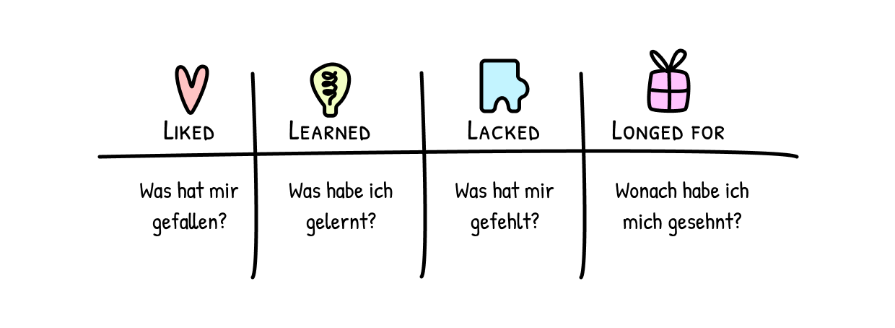
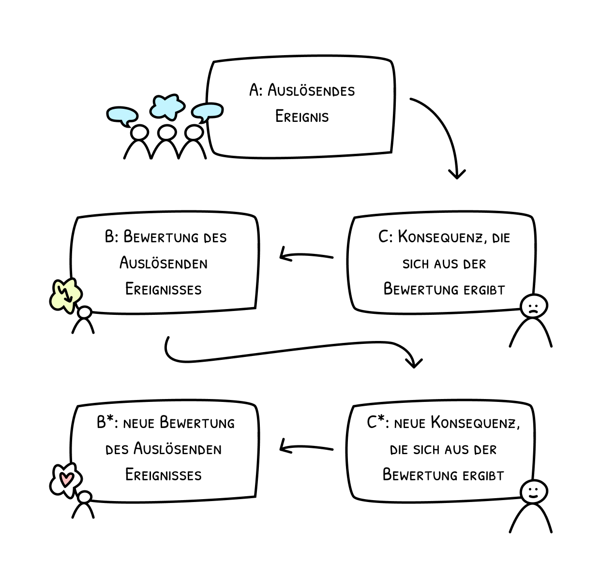
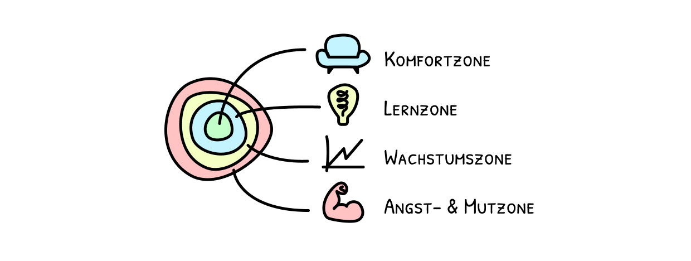
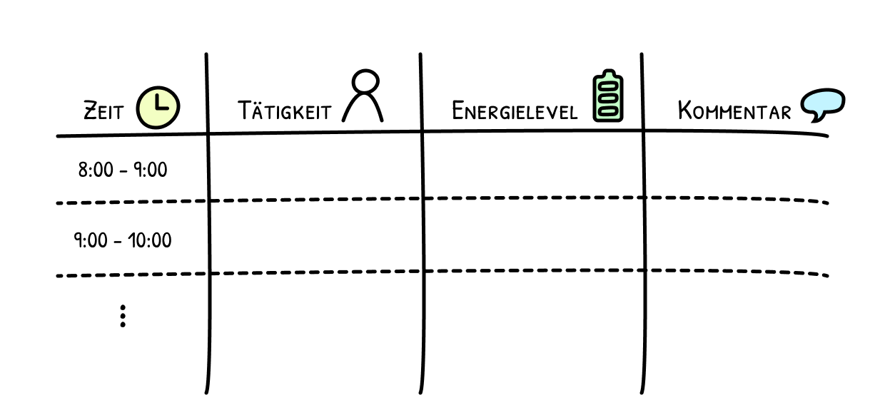
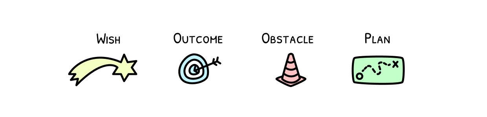

Mind Tools
Mind Tools bietet dir eine Sammlung an Methoden, die dir dabei helfen, bewusster zu leben, klarer zu denken und gezielter zu handeln. Im Alltag, im Beruf oder in der persönlichen Entwicklung.
4L

Eine Methode aus der Retrospektive, die bei einer strukturierten Reflexion über Erfahrungen, Erfolge und Defizite hilft.
5-4-3-2-1 Methode
Eine Methode, die helfen kann, die eigene Aufmerksamkeit zu schulen, indem sie mit den 5 Sinnen in den aktuellen Moment gebracht wird.
ABC-Modell

Ein Modell, dass hilft das eigene Verhalten besser zu verstehen und zu verändern.
Mad–Sad–Glad
Eine Methode, die hilft emotionen sichtbar zu machen um diese bewusst und strukturiert zu reflektieren.
Komfort- bis Mutzonen

Eine Möglichkeit die eigene Komfortzone Schritt für Schritt zu erweitern.
Tagesprotokoll

Ein Werkzeug, um den Tag zu protokollieren und zu reflektieren.
Start-Stop-Continue
Eine Methode, die dabei hilft klarer auf das eigene Verhalten zu schauen und neue Lösungen und Veränderungen anzustoßen.
WOOP - Methode

Die WOOP - Methode soll dabei Helfen, Ziele und Wünsche zu visualisieren und durch einen konkreten Plan umsetzbar zu machen.